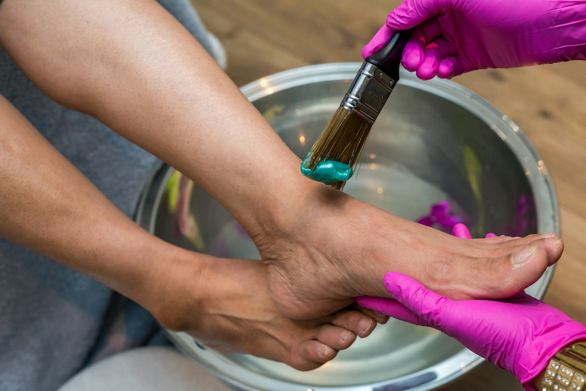
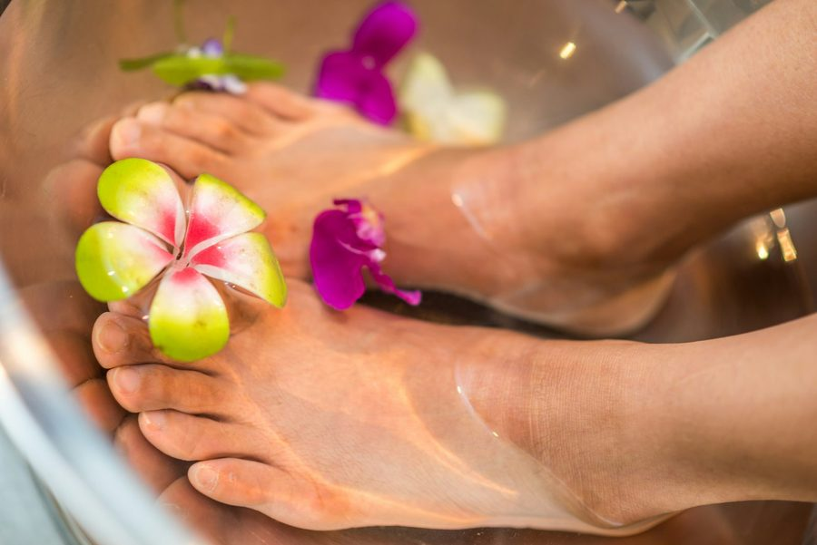
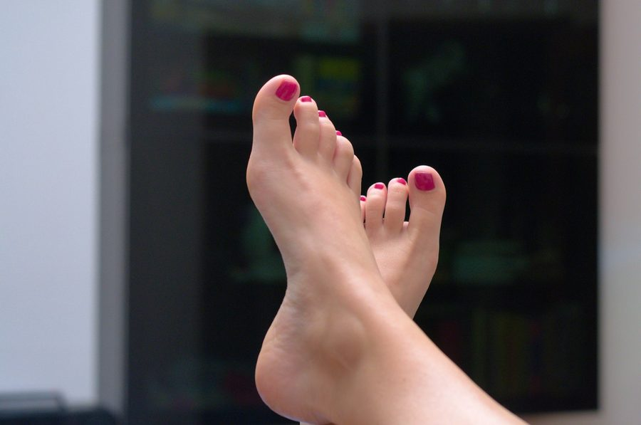
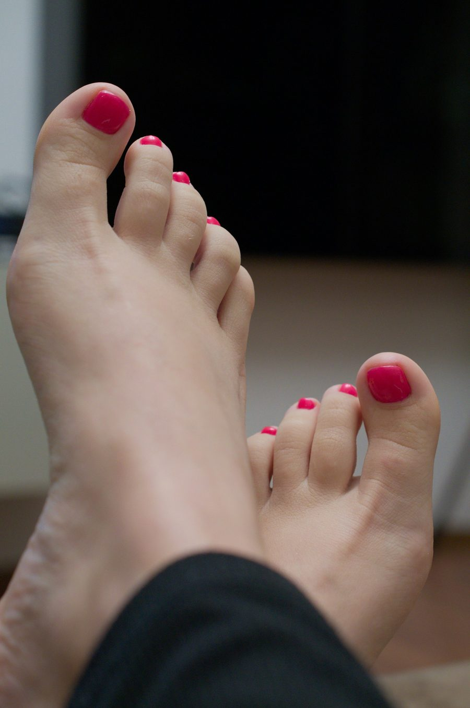

Deskundige pedicure in een ontspannen sfeer
Pedicuresalon La Voetyke aan het Mill Hillplein in Roosendaal. We nemen de tijd voor uw voeten, ook bij diabetes of een spastische voet. Online een afspraak maken kan altijd.
Lyke is écht een hele deskundige pedicureAngelie · gemiddeld 5,0 uit 104 beoordelingen
Behandelingen
Van een goede pedicurebehandeling tot mooie gellak voor de zomer. Of combineer het, voor een echt verzorgd gevoel.

Pedicure
Een complete pedicurebehandeling, waarbij we zorgvuldig te werk gaan en rekening houden met gevoelige plekken.

Gellak
Gellak op de teennagels, ook voor in de zomer. Is de gellak bij ons gezet, dan verwijderen we die gratis.
Voetmassage
Een ontspannende voetmassage van 25 minuten. Los, of samen met uw pedicure.

Combinatie
Pedicure met gellak (Beauty) of pedicure met voetmassage (Relax).
Ook bij diabetes of een spastische voet
Voor deze voeten hebben we een aparte pedicurebehandeling, tegen hetzelfde tarief. Daarnaast helpen we bij likdoorns en afgebroken nagels, plaatsen we nagelbeugels en maken we orthesen op maat.
Prijzen
Alle behandelingen en tarieven op een rij.
Pedicure
Combinatiebehandelingen
Massage
Gellak
Voet- en nagelproblemen
Wat klanten zeggen
"De behandeling was super fijn en mijn nagels zijn ontzettend mooi gelakt met gellak! En Lyke, de eigenaresse, is ontzettend aardig."
Conny · Salonized"fijne professionele behandeling. Ik heb moeilijke voeten maar daar weet deze pedicure heel goed raad mee. Dankzij de gel-lak kan ik nu toch weer een slipper aan van de zomer."
Marike · Salonized"Lyke werkt heel verzorgd en hygiënisch. Een mooi resultaat en gezellige gesprekken tijdens de behandeling. Een echte aanrader!!"
Scarlett · Salonized"Fijne behandeling, werkt heel nauwkeurig, schoon en houdt rekening met gevoelige of pijnlijke plekken."
Leen · Salonized"Ze maakte voor mij extra tijd vrij,goede behandeling, had last van likdoorn. Kom zeker weer terug."
mevrouw Pot · Salonized"Deskundige voetverwennerij in een ontspannen sfeer .... mijn 80 jaar oude voeten lopen weer alsof ik 40 ben!"
Leon · SalonizedPersoonlijk, en met de tijd voor u
La Voetyke is de pedicuresalon van Lyke, aan het Mill Hillplein in Roosendaal. Hier krijgt u een grondige behandeling zonder haast, en meestal een gezellig gesprek erbij.
Of u nu komt voor verzorgde voeten, een likdoorn of een nagel die aandacht nodig heeft: we kijken wat uw voeten nodig hebben en u krijgt advies mee voor thuis.
Je voelt je meteen thuis bij Lyke en er wordt goed voor je voetjes gezorgd!Ellen, via Salonized
Afspraak maken
Plan uw afspraak online, of bel even. Heeft u eerst een vraag? Dan hoort Lyke graag van u.
Pedicuresalon La Voetyke
Pedicure in Roosendaal